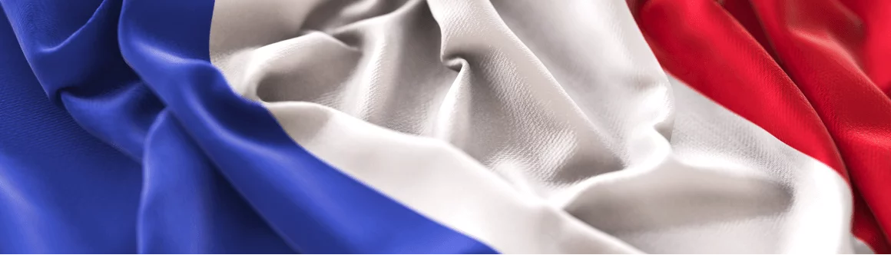
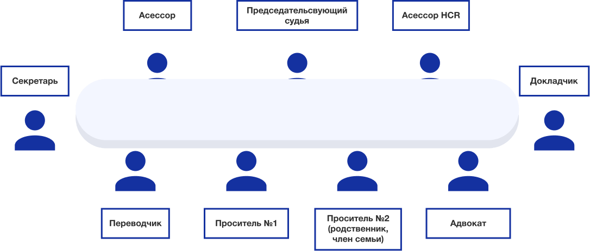
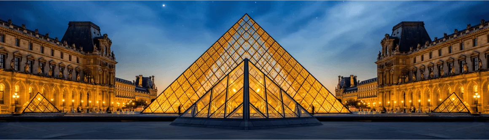

.png)
ПОМОЩЬ В ПОЛУЧЕНИИ ПОЛИТИЧЕСКОГО УБЕЖИЩА ФРАНЦИИ
Получение политического убежища во Франции процесс сложный и длительный. Лишь только квалифицированный адвокат, специализирующийся на вопросах беженства и защиты, может создать досье беженца, которое можно с успехом защитить в специальной организации по делам беженцев во Франции (OFPRA — ОФПРА). Если на первой инстанции в получении статуса беженца отказано, то существует специальный аппеляционный суд по делам беженцев CNDA, который может отменить решение OFPRA и признать беженцем заявителя
Среди европейских стран Франция всегда считалась страной, где принято защищать права человека. Из всех стран Западной Европы, она является лидером по приему беженцев и занимает первое место по количеству общественных правозащитных организаций. Именно во Франции, в Страсбурге расположен Европейский суд по правам человека. В умах многих людей Франция всегда была и остается гостеприимной и благожелательной к иностранцам страной. По этим и многим другим причинам российские беженцы выбирают именно эту страну в качестве своего политического убежища.

КТО УЧАСТВУЕТ В РАССМОТРЕНИИ ХОДАТАЙСТВ О ПРЕДОСТАВЛЕНИИ УБЕЖИЩА?
Ниже представлена информация только о государственных учреждениях. Именно они занимаются рассмотрением ходатайств о предоставлении политического убежища. Существует много агентств и ассоциаций, с которыми должны взаимодействовать люди во время процедуры прошения убежища.
PADA
PADA - это платформы для просителей убежища. В каждом департаменте есть, по меньшей мере, одна такая платформа. Некоторые из них иногда имеют несколько офисов в каждом департаменте. Они несут ответственность за прием новоприбывших мигрантов и помогают назначить первую встречу в префектуре.
OFII (Французское управление по делам иммиграции и интеграции)
В OFII вам предложат ответить на перечень вопросов для того, чтобы определить, нуждаетесь ли Вы в особенных условиях приема. Роль этого управления заключается как в обеспечении условий приема мигрантов во время рассмотрения их ходатайства об убежище, так и в интеграции лиц, уже получивших защиту (в частности, путем подписания республиканского интеграционного контракта, который открывает право на 200 часов уроков французского языка для мигрантов). OFII находится в тесном сотрудничестве с OFPRA.
OFII (Французское управление по делам иммиграции и интеграции)
Это государственное учреждение особенно важно для соискателя убежища, именно оно принимает решения в процессе рассмотрения вашего ходатайства. Сюда Вы будете направлять все документы по Вашему делу. Сначала Вам будет нужно на нескольких страницах описать вашу личную ситуацию, оставаясь при этом максимально точным и лаконичным. Не нужно рассказывать все, нужно уметь выделить в своем рассказе только самые важные факты, которые Вы сможете документально подтвердить.
Для этого Вы можете использовать ссылки на прессу или видеоматериалы. Но не забывайте, что они должны использоваться, как документальное подтверждение пережитой вами ситуации, а не общей ситуации в стране. Затем с заявителями проводит индивидуальные интервью сотрудник по вопросам защиты (officier de protection), который будет рассматривать Ваше дело. К интервью нужно будет тщательно подготовиться, так как сотрудник управления по делам беженцев будет задавать Вам конкретные вопросы, часто личного характера. Во время интервью не следует волноваться и излишне нервничать, это может быть неправильно истолковано сотрудником OFPRA.
Следует отметить, что у множества соискателей убежища сохраняются вполне доброжелательные воспоминания от общения с сотрудниками OFPRA. Вы четко должны знать свою историю, избегать противоречий между вашим письменным рассказом и ответами на вопросы сотрудника управления. Не повторяйте в точности то, что вы уже указали письменно, так как сотрудник прочитал письменное изложение Вашего дела и прекрасно владеет его содержанием. Отвечайте только на конкретно поставленные вопросы.
Если Вы не владеете французским языком, Вам будет предоставлена помощь переводчика. Само учреждение OFPRA расположено в Фонтенуа-Су-Буа (в пригороде Парижа). Через него проходят все просители убежища во Франции, где бы они не проживали в Марселе, Нанте, Страсбурге или в любом другом городе Франции.
CNDA (Апелляционный суд по делам беженцев) Есть вероятность того, что Вы получите отказ от управления OFPRA. В данном случае у Вас будет возможность обратиться в Национальный суд по вопросам права на убежище (CNDA) и обжаловать решение OFPRA. Ниже Вы найдете приблизительную схему участников слушания в CNDA, которая позволит вам получить общее представление о том, как будет проходить слушание вашего дела.

CNDA РАССМОТРИТ ВАШЕ ДЕЛО И ПРОАНАЛИЗИРУЕТ ПРИЧИНЫ ОТКАЗА OFPRA
Суд запросит дополнительные документы или информацию в соответствии с Вашей историей. В CNDA как самому соискателю убежища, так и адвокату предоставляется возможность доказать, что OFPRA приняла неверное решение. Сначала докладчик зачитывает Ваше дело, и затем судья и асессоры поочередно задают дополнительные вопросы просителю убежища. После этого адвокат делится своими соображениями. Во время слушания нужно быть особо бдительным, точным и уверенным в своих ответах, так как председатель слушания будет задавать конкретные вопросы, которые возможно не будут связаны хронологически. Если у Вас еще не было времени выучить французский язык, и вы недостаточно им владеете, вам будет бесплатно предоставлен устный переводчик. Французское государство также оплатит гонорары адвоката. В CNDA проситель убежища пользуется помощью бесплатного адвоката в 60% случаев. Разумеется, лучше нанять платного адвоката, потому что государственные адвокаты сталкиваются с такой проблемой как нехватка времени. Часто у них просто нет возможности встречаться с просителями убежища вплоть до самого заседания. К тому же всегда есть риск, что адвокат не до конца знает Вашу ситуацию, причину отказа OFPRA или не является вообще специалистом по Вашей теме.
Различные виды процедур предоставления убежища - классическая или ускоренная? OFPRA отвечает за рассмотрение ходатайств о предоставлении убежища как в рамках обычной (классической), так и ускоренной процедуры. В обоих случаях само ходатайство теоретически рассматривается одинаково. Большая разница наблюдается в сроках рассмотрения ходатайств. OFPRA выносит решение в течение 2 недель в случае ускоренной процедуры, вместо 6 месяцев в рамках классической процедуры. Лица, прибывшие из страны, включенной в список т.н. "безопасных стран", помещаются под ускоренную процедуру. Под такую же процедуру подпадают лица, которые требуют пересмотра своего дела после решения об отказе, те, кто предоставил фальшивые документы, а также те, кто отказался сдавать отпечатки пальцев. Может случиться так, что OFPRA решит отменить ускоренную процедуру, например, для членов одной и той же семьи. Например, среди наших клиентов было две сестры, одна из которых проходила по классической процедуре, а другая – по ускоренной. В конечном итоге, дела обеих сестер рассматривались в рамках классической процедуры.

Если выяснится, что дело более сложное, чем кажется, то по решению OFPRA заявитель также может вернуться к классической процедуре. У нас был клиент с двойным гражданством, одно гражданство безопасной страны, а другое нет. Его дело требовало более углубленного изучения, поэтому было решено перевести его рассмотрение в рамки классической процедуры. Технически, ускоренная процедура может рассматриваться как наказание. Последствия, прежде всего, ощущаются на уровне CNDA, когда ОFPRA отказала просителю убежища и он подает в CNDA на апелляцию. В отличие от традиционного просителя убежища, у которого было бы больше времени на составление материалов защиты и сбор доказательств, в этом случае у Вас будет около двух недель и ваше дело в CNDA будет рассматриваться в ускоренном порядке только одним судьей без асессоров. Согласно отчету OFPRA за 2018 год, в прошлом году 24 ходатайства о предоставлении убежища, поданные в рамках ускоренной процедуры, были переведены в обычную классическую процедуру.
ВЫ ЧУВСТВУЕТЕ СЕБЯ НЕМНОГО РАСТЕРЯННЫМИ ОТ ТАКОГО БОЛЬШОГО ПОТОКА ИНФОРМАЦИИ?
Чтобы упростить понимание процедуры прошения убежища во Франции, обратите внимание на эту схему. Надеемся, она поможет Вам понять основные моменты.
Подача заявки
Обращение в структуру первичного приема (SPADA) по месту пребывания для получения направления в Префектуру, 3-10 дней с момента обращения.
Прием в Префектуре
Префектура снимет отпечатки, определит тип процедуры (обычная, ускоренная, Дублин), выдаст удостоверение беженца и формуляр OFPRA и направит в OFII для получения социальной помощи.
Подача ходатайства в OFPRA
В течение 21 дня после приема в Префектуре. Необходимо подать заполненный формуляр и приложить документы-доказательства.
Рассмотрение досье
Сотрудники OFPRA проведут интервью и проанализируют все предоставленные материалы. Вас может сопровождать переводчик и/или адвокат.
Вынесение решения
В случае положительного решения выдаются документы гражданского состояния. Отказ возможно оспорить в CNDA.
Обжалование в CNDA
Решение OFPRA можно обжаловать в течение 1 месяца. CNDA может отменить решение OFPRA или подтвердить отказ.
Совершенно очевидно, что требования к процедуре оформления статуса беженца очень высокие и в ней есть множество нюансов, незнание которых может нанести непоправимый ущерб соискателю политического убежища. Языковые, юридические, законодательные и многие другие барьеры в зачастую являются сдерживающим фактором и иногда останавливают соискателей на полпути к цели. Чтобы предотвратить такую ситуацию, необходимо обратиться за помощью к специалистам и экспертам, которые проконсультируют Вас по любому вопросу, связанному с предоставлением политического убежища на каждом из этапов его получения.
Обратитесь к нам, и мы сможем разъяснить непонятную Вам ситуацию и станем Вашим помощником при взаимодействии со всеми вышеперечисленными административными структурами.
Приехать жить во Францию.
Главные ценности французского общества и Республики.
Главные ценности французского общества и Республики Каждый год Франция принимает более 100 000 иностранцев, являющихся гражданами стран, не относящихся к Европейскому союзу, из всех регионов мира, целью которых является постоянное проживание на территории Франции. Франция — это многомиллионная нация с богатой историей и культурой. Название страны является синонимом фундаментальных ценностей, которым привержены французы. Подобные ценности существуют во всех странах и позволяют людям жить вместе в рамках одного общества: некоторые из ценностей универсальные и общие для всего человечества, другие относятся только к культуре одной страны, являясь результатом истории, которую прожила отдельно взятая территория. Они настолько важны, что, применяясь к людям разного происхождения, они объединяют их вокруг общих правил. Эти ценности выражены в девизе Французской Республики: свобода, равенство, братство.